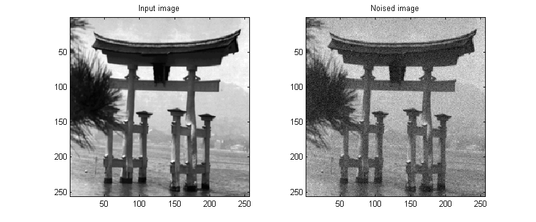
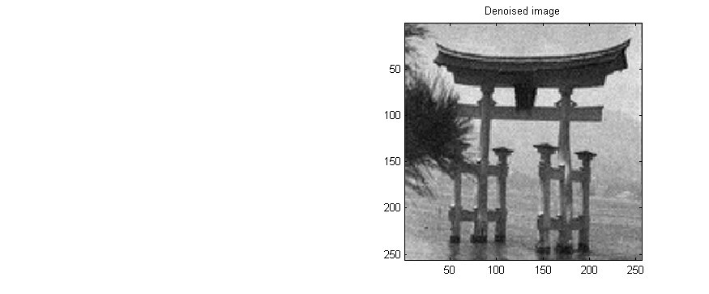

| FRACLAB Functions |
|
Performs the Multifractal Denoising of a 2D signal using a Multifractal pumping method and multiplying the wavelets coefficients by a number Xj in (0,1) constant by scales
DENX = mfdnorm2d(x,QMF)
DENX = mfdnorm2d(...,'Propertyname',Propertyvalue)
[DENX,SIGMA] = mfdnorm2d(...,'autonoise')
DENX = mfdnorm2d(x,QMF) Computes the denoised signal, DENX, of the input signal x using a specific quadrature mirror filter, QMF.
DENX = mfdnorm2d(...,'Propertyname',Propertyvalue) Computes the denoised signal, DENX, applying the specified property settings. The property setting can be choosen from the list below :
| Property | Purpose |
|---|---|
| 'increase' |
The DENX is computed with a specific regularity increase, R. The parameter R
is a positive real. |
| 'noise' |
The DENX is computed with a specific standard deviation of the noise, sigma. The parameter sigma
is a positive real. |
| 'level' |
The DENX is computed with a specific start level, L. The parameter L is a positive
integer in (1+log2(max(size(x)))/2,log2(max(size(x)))) that defines the start level where the computation begins. |
[DENX,SIGMA] = mfdnorm2d(...,'autonoise') Computes the denoised signal, DENX, of the input signal x
using an estimated standard deviation of the noise, SIGMA, this value can be then returned if wanted.
If 'autonoise' is not specified, the default value is SIGMA = 0.5.
|
The estimation of standard deviation |
images_loc = which('mfdnorm2d.html');
x = imread(fullfile(fileparts(images_loc),'images_examples','Denoising','door.tif'));
x = ima2mat(x); b = randn(size(x)); xb = x + b/20;
QMF = MakeQMF('daubechies',10);
y = mfdnorm2d(xb,QMF,'increase',0.2);
figure; subplot(1,2,1); imagesc(x); title('Input image'); axis image;
subplot(1,2,2); imagesc(xb); title('Noised image'); axis image;
colormap(gray);
figure; subplot(1,2,1); imagesc(x); title('Input image'); axis image;
subplot(1,2,2); imagesc(y); title('Denoised image'); axis image;
colormap(gray);


mfbayesian2d, mfdnolinear2d, mfdpumping2d, wavereg2d, waveshrink2d
| |
mfdnorm1d | mfdpumping1d | |